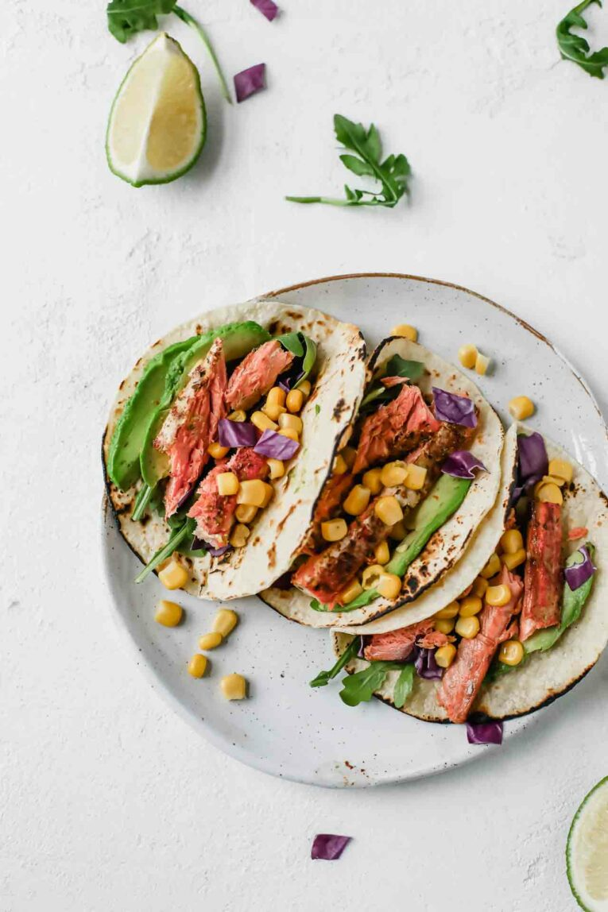

Spicy Salmon Tacos

Made with juicy salmon fillets, corn, shredded cabbage and drizzled with a tangy and creamy avocado lime dressing or topped with avocado slices.
Ingredients
- 2 Salmon Filets
- 1/4 Tsp Paprika
- 1/4 Chili Powder
- Salt/Pepper
- 1 Avacado
- 1 Lime
- 4 Corn Tortillas
- Romaine Lettuce (2 leaves)
- 1/2 Cup Shredded Purple Cabbage
- 1/3 Cup Beans
- 1/4 Cup Corn
Instructions
- Preheat oven to 350 degrees
- Mix paprika, chili powder, salt, and pepper in a small bowl
- Rub the spices over the salmon filets and bake for 10-15 minutes. If filet is thawded or 20-30 minutes if cooking from frozen
- While the salmon is baking, cut avacado into cubes
- Once the salmon is finished baking top 4 tortillas with lettuce, cabbage, beans, corn, salmon, and drizzle with avacado lime dressing